Conectamos a los productores del Huila con consumidores que valoran la calidad y el origen.

Ubicación: {{ location }}
Correo: {{ email }}
© 2025 Portal Agro Comercial - Todos los derechos reservados